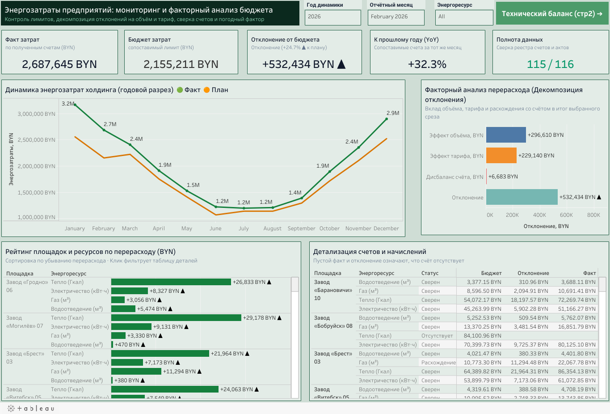
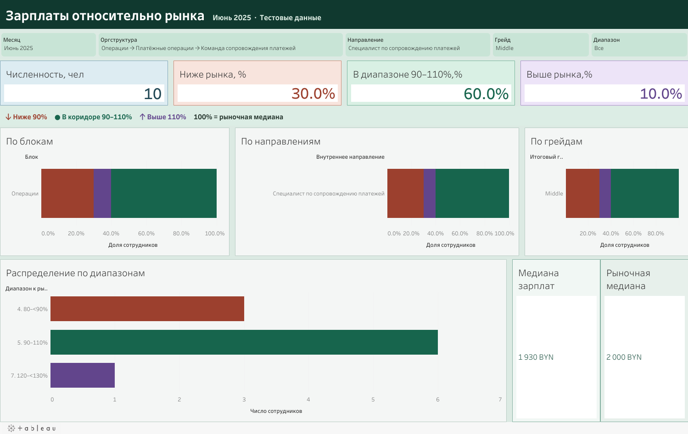
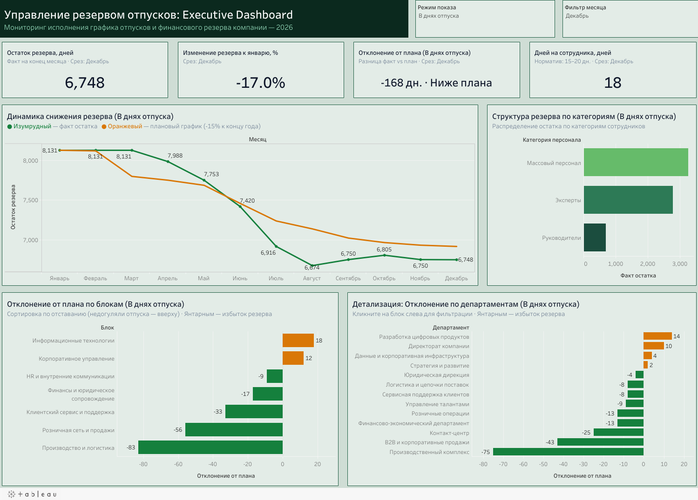

Book proofreading workflow
4× average speedup
Reviewed the proofreading workflow and delivered a Python tool for manuscript review. The average speedup was measured in timed comparisons.
Entsiklopediya Publishing House
Data Analyst / BI Analyst
I build dashboards, automate reporting, and help explain what drives changes in key metrics
View experience
4× average speedup
Reviewed the proofreading workflow and delivered a Python tool for manuscript review. The average speedup was measured in timed comparisons.
Entsiklopediya Publishing House
Median salaries
Built a dashboard comparing median salaries with market benchmarks by business area and job grade. It helped identify departments where pay lagged behind the market and informed pay decisions.
Alfa-Bank Belarus
1.5 weeks → 3 days
Automated data collection from 10+ sources for a consolidated production report.
Minsk Poultry Farm No. 1
15+ reports
Automated payroll, labor standards, and piece-rate reports.
Belorussky Poultry Breeding Plant
The Tableau Public dashboards use synthetic data to illustrate problems I’ve worked on. The dashboard interfaces are in Russian.
Business outcome. The dashboard helped the client track changes in energy costs and investigate budget overruns from the overall total down to individual sites, utility types, and invoices.

My contribution. I wrote the SQL for a PostgreSQL data mart that brings together meter readings, invoices, and budgets by site, utility type, and month. I exported 4,872 rows across 36 sites to CSV and built two linked Tableau views for budget variance analysis and meter reconciliation.
What the demo shows. Across the full dataset, the BYN 4.31 million budget overrun breaks down into consumption volume (BYN 2.36 million), tariffs (BYN 1.94 million), and invoice discrepancies (BYN 6,683). The technical view lets users reconcile invoices against meter readings and identify missing invoices.
Business outcome. The bank gained a way to identify teams and job grades where pay lagged behind the market. Managers could use market medians to inform pay reviews and track alignment with the bank’s compensation strategy.

My contribution. I built a Power BI dashboard, set up a monthly process in Power Query to combine staffing records, and applied an existing mapping between the bank’s job functions and market job categories.
What the demo shows. The Tableau dashboard uses Excel data and lets viewers drill down from a monthly view of 200 employees to a specific team and grade. In the payment support team, 3 of 10 mid-level specialists fell below the target range of 90–110% of the market median.
Business outcome. The analysis showed that specialists and managers accounted for most of the leave reserve by value. The company used this finding to revise its strategy for reducing the reserve and began monitoring it regularly.

My contribution. I used Python to model 12 months of data for 370 employees and generate an Excel file. I built the dashboard extract with Tableau Hyper API and used Python and SQL checks to validate the data and calculations.
What the demo shows. The Tableau dashboard compares planned and actual balances in days and BYN. Production and logistics stand out by days, while corporate management ranks highest by value. In the December view, the balance in days is 17% below its January level.
Oct 2026 — Present
Analyst · Independent project
Built and delivered a Python tool that checks quotations against the manuscript and generates an Excel report for manual review.
Sep 2025 — Oct 2026
HR Data Analyst / BI Analyst
Built dashboards and data models, automated training reporting, and investigated reasons for employee departures.
Oct 2023 — Mar 2025
Data Analyst
Queried invoice data in SQL and analyzed energy spending across periods, regions, and resource types.
Dec 2019 — Aug 2023
Economic Analyst
Automated production reporting and calculated how changes to the pay system would affect 500+ employees.
Aug 2018 — Nov 2019
Labor and Payroll Economist / Acting Chief Economist
Automated labor and payroll reporting and led a team of four economists during a reorganization.